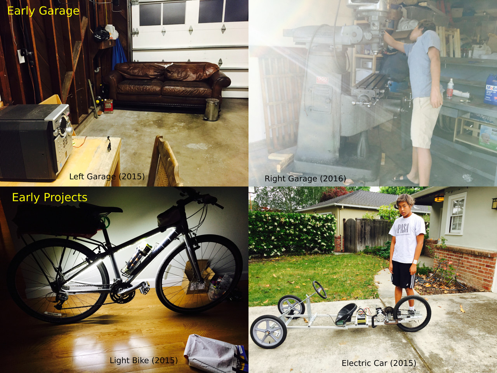

Ethan's MIT Maker Portfolio
HomeA Foreword
This is a collection of images and descriptions from the maker portfolio
that I used to apply to MIT. I haven't
edited it too much but its a good overview of some of
my previous projects.
A long time ago...
|  |
Hi! I’m glad you could stop by. I’m Ethan! |
Projects!
Belt Grinder
 |
To get better at using the mill and lathe, I
turned to Youtube for instruction. I watched hundreds and hundreds
of making videos on all sorts of projects. In many
of these, it seems that the presenters were building or
had built their own tools — and among these, belt
grinders were quite popular. So, as my first “big” project,
I decided to build one too. Drawing on inspiration from
all the different videos, I came up with this design.
It uses crowned pulleys in the back to keep the
belt on the pulleys and a door hinge and spring
assembly for fine tracking adjustment and tension. I probably went
overboard with the amount of solid aluminum stock, but hey,
if I have a mill, I might as well practice. |
Pedestal Grinder
 |
It turns out, I really like making machine tools.
After some browsing on Craigslist (where all the machines were coming from),
I found this grinder for $50.
At that price, I could probably make a profit selling the motor and scrapping the cast iron.
But instead, I thought I’d improve it a bit. |
 |
And this is what I ended up with!
There wasn’t a straight path for a belt from the new motor location to the spindle,
so I added some idler pulleys to redirect the belt.
To support these, I added some braces connecting the grinder frame directly to the motor mount.
Keep in mind that the vast majority of these projects were designed pencil on paper.
I only really started CAD with the CNC project and more complex projects after that. |
Supermax Milling Machine
 |
Ah, the Supermax.
This is one of, if not the biggest tool repair/modification I’ve done to date.
As with the grinder, this was a cheapo craigslist find.
The seller said the computer controller (CNC) system didn’t work (ok, no biggie right?).
When I got it home, turns out neither did the spindle or the head (nothing spun).
The machine base, however, was in near perfect shape (less than 0.002” backlash),
which justified fixing the rest. |
 |
Well, there’s never just one thing wrong.
On the first test run with the new spindle, smoke shot out the top of the motor
and the machine roared like a jet engine (not good).
Luckily, the smoke was just the belt slipping on some loose oil.
But the roar? I had no clue. |
 |
At this point, the Supermax worked perfectly
as a manual mill but I never was able
to fix the old computer system. Eventually, I opted to
convert the machine to run on Linux CNC (a free CNC
driver os) and to switch out the old motors and drivers
for newer steppers. This was partially intended to be a test
run for designing and setting up a CNC system (for the
large CNC, next). While I started out with no clue
how a CNC even works, everything turned out alright and the
machine moves in accordance to the computer. |
 |
And it’s done!!! It’s been almost three
years (75% of my time as decent maker) but
I’ve managed to take this broken machine and turn it
into a fully functional two axis CNC. On the right,
you can see some projects and job shop work I’ve
done with the mill. |
The CNC
 |
A long time ago, I got a CNC router for Christmas.
It worked alright, one in ten times. A few
years down the road (present time) I’ve gotten
it to work better, but it’s never been well
suited for my needs. |
 |
Originally, I was planning to make the CNC from concrete for
its low cost and high dampening properties. As I did more
research, I concluded that concrete exhibits low dimensional stability, and
that a similar substance utilizing epoxy as the binder (epoxy granite
) is favored in the machine tool industry. I also found
a variety of forum posts online about optimal compositions of epoxy granite,
but no precise values. This led me to conduct my
own mixture tests, using low viscosity epoxy and a mixture of
sand, glass nanospheres, and gravel as my aggregates. I
also tested how well steel inserts could be cast into epoxy granite
blocks (pretty well actually). |
 |
I was preparing to make the epoxy granite machine when my friend’s
father (where the motor came from) offered me 8000lbs of
precision granite surface plates (the holy grail of precision machine tool
bases). I couldn’t resist, and had them delivered
to the garage. Unfortunately, this means that the machine must
be designed around those new plates. Unlike the other designs,
I’ve been doing the granite CAD in Solidworks. It
’s quite different from Fusion, but I really like all
the different parameters, the file system, and how well it
does with larger models. |
E-bike attachment
 |
We will now leave the world of tools behind and instead look
towards electric vehicles. |
 |
As with the belt grinder, this attachment contains excessive aluminum (
See the theme here?) and can probably survive a crash at
25mph (how fast it goes) unscathed. The motor is
from an electric scooter that I was given and the rest of
the electronics are off ebay and amazon. |
Electric Shopping Cart
 |
You know, shopping carts are pretty slow… We can change
that. |
 |
I basically shoved the shopping cart in a corner for two years
while working on other projects. Until, one of our robotics
team mentors said his work (Department of Water Management) had
a bunch of broken Lime-E and Bird scooters that had
been thrown in the creeks that he could give me. I
couldn’t say yes any faster. |
 |
And it turned out really well! I figured out that I
could steer similar to how a bike can be ridden no handed
by angling a single front wheel forward. This system however was
susceptible to oscillations (caster wobble) and made the cart near
uncontrollable at certain speeds. To combat this, I added the
bar to the front axle (shown previously) to increase the
system’s moment of inertia. This worked to a degree,
but still produced oscillations (now at a different speed).
I then thought about how large towers combat oscillations with a liquid
filled damper. The first bottle of liquid I found was a
coke bottle, which, once installed, worked so well
that it became the permanent damper. |
Conductivity Meter
 |
Now, we arrive at the “school” projects. This
was from an AP Chem extra credit assignment (build a conductivity
meter). I could have done something with tin foil and a
lightbulb, but I really wanted to try making glass and tungsten
probes (relatively inert materials) and see if I could mimic
the old style ammeters with a coil. That led to this
design. I played around with fusing tungsten inside some glass tubes
for the inert probes and with trying out some woodworking techniques on
the frame to get that vintage vibe. I also discovered how
much fun copper wire is for making little levers and stuff.
The meter works well for differentiating between non-conductive, moderately
conductive, and uber conductive substances but (expectedly) doesn’t
tell the operator too much else. At this point in
shop history, I’d gotten pretty competent at making random
things; so, this was more of a “let your imagination run wild” project. |
Brain Model
 |
The more recent of the school projects, this was for the
“build a brain” AP Psych assignment. Again, something
simple like play-doh would have worked, but where’
s the fun in that? I really loved working with copper
in the conductivity meter, so this time I went for a
full copper frame. The sheets on top were hammered to represent
each lobe of the brain, while electronics components inside represent (
in shape) each part of the brain. A switchboard at
the base controls each part individually, allowing the user to associate
a labeled switch with the corresponding brain part. And I couldn’t
resist the idea *lightbulb* trope. So,
when all the switches are turned on, the light turns on
too! (via a relay). Like the conductivity meter,
this was a “wild imagination” project. It was a
ton of fun and something I couldn’t have dreamed of
doing three years prior. |
Robotics in the Shop
 |
In parallel to my own projects, I was (and still
am) a very active member of an FRC robotics team.
We are not affiliated with a school, and when I joined
four years ago, worked out of a residential one car garage
limited to hand tools. Once I had set up shop,
gotten and set up more equipment, build tools, and figured
out how to run everything, I started inviting the team over
to machine. It’s pretty nerve racking, demoing a
huge machine tool in front of an audience. But watching everyone
’s smiles as they make their first cuts (as I
did years prior) makes the nerves more than worthwhile. Now,
I’m (along with the responsibilities of being build
captain) in charge of all machining that goes on in the
team, whether that be training members how to machine, or
organizing 5-7 teenagers into running all sorts of machine tools
simultaneously. |
 |
Given that my FRC team is also on the small side,
I’ve been given the opportunity to design and machine certain
assemblies from start to finish. This past year, I designed
the main pivot and pivot support for our arm, using custom
nylon bushings in an aluminum housing for the bearing element, and
pushing for the layered polycarbonate tower as a more compliant way to
support the arm (as opposed to a welded structure). I
ended up machining the pivot assembly as well due to the relative
complexity of the parts. |
Spartan Superway
 |
Around summer 2018, I met Professor Furman of the San Jose
State Spartan Superway Project in a truly serendipitous fashion. At some
point, he mentioned a problem with their track, to which
I sat down and offered a potential solution. That solution got
me invited to conference weekly with the project and more recently,
work with him and other college students over the summer. During
this time, I designed and cadded a modular 12th scale track
and bogie assembly, intended to be cut on the waterjet and
laser cutter. The bogie is designed to be 3D printed while
the protruding nubs serve as guides. This, along with the
CNC, is where I really dove into solidworks CAD and where
I started to dabble in using FEA for my projects. This
experience is also my first time using my making knowledge and applying
it to a much larger and more significant project. Here is
a link to more details on the Superway and my work if
you are curious: https://jacqueshariel-ango-spartansuperway.blogspot.com/ |
Kuprion Inc.
 |
When I work, I tend to keep the garage door open
. Thus, a decent portion of the neighborhood knows that a
machine shop lives in my garage. One day, I got
a knock on my door from a neighbor who works at the
copper nanoparticle startup, Kuprion inc. Apparently, they needed something
machined! Given that I’m a highschooler, I offered
1-2 day turnaround and a minimal cost. Well,
it seems they liked my work and, as such, have
been asking me to complete new jobs every now and then as
they get their copper production setup running. So far, I
’ve made some baffles, modified their reactor lid, designed
and built a reagent dispenser, and designed and built a motor
adapter. Considering that four years ago, I didn’t
know what a mill was, I’d say that designing
and machining for money is quite an improvement!
And apparently they think my work is pretty decent as well. |
Others
 |
Well that sure was a lot of projects, right? Here
’s 16 more! Jk, I had the space so
I thought I’d include an honorable mentions list. Most
of these are just storage and organization for the garage. At
some point, I also made copper coils for my school’
s physics department and built a venus fly trap growing apparatus for
my room. I think it just goes to show how much
infrastructure is needed to actually get a machine shop to function and
how I’ve managed to optimize my garage for maximum space efficiency. |
Current Garage
| I can't find the pic :( |
And this is it! The garage as it currently stands.
These past four years have been a wild ride. I’
ve taken this garage from an empty room to a full fledged
machine shop. I’ve made parts for a startup,
worked on a college project, made custom machines, built fun
vehicles, gone overboard with school projects, and hosted and mentored
my FRC team. I’ve gone from not knowing how
a drill press works to designing my own CNC machine tools.
I’ve kindled my love of making and taken my projects
to the next level. Quite frankly, I’m proud
of how far I’ve come. And as the next
stage of life approaches, I’m eager to make so much more! |
Some background for curious people (Circa 2019 and not entirely accurate)
What do I make
I make machine tools, relevant machine shop accessories (shelving, tool storage, tables, etc), electric vehicles, novel vintage style science electronics, and parts of FRC robots. The machine tools are either entirely custom or a modification of an older or broken machine. Of course, to run machine tools in a garage, a certain degree of infrastructure is required. Thus, I’ve built some tool and material storage, along with workbenches. And as more of a “get loose” style of project, I like making electric vehicles using reclaimed e-scooter and e-bike electronics. In addition, given the small size of my FRC team, I’ve had the privilege of making certain assemblies from start to finish. And, sometimes, in school, we are given some open ended task like “build a brain model”. For these, I like to go retro and design something fun using wood, copper, and vintage looking electronics.
How do I make
I’ve turned my residential garage into a full blown machine shop. Using machine tools I’ve built, restored, or found on Craigslist, I machine my creations from raw steel and aluminum stock. On occasion, I will also weld (using an old Miller stick welder) steel tube together to make various machine frames. I use Solidworks CAD to design more technical projects (CNC mill), Fusion 360 CAM to drive the CNC router and retrofitted mill, and paper and pencil for the get loose projects. No one else in my family is a big “maker ,” thus 95% of what I know has come from watching machinists, woodworkers, and fabricators on Youtube . By peering into their workshops for hours on end , I embark on a “virtual apprenticeship,” obtaining tips of the trade from the best in the business.
What is my most significant project?
My most significant project is my (in progress) custom CNC mill. I tend to make projects based off some initial curiosity (Hey, I got a cnc router kit but it doesn’t work very well, let’s make it better!) and then go from there. This project started out innocently enough (let’s weld a new frame, upgrade the motors, and be done). But then I decided I wanted a larger work envelope and better rigidity, which led to the question of manufacturability, which led to research in epoxy granite machines, which led to epoxy granite mixture testing, which led to me getting free 2000lb granite surface plates from a friend, which leads to the current state of the project at CAD of the granite design. This meandering of exploration through all the fascinating intricacies of a project is the epitome of why I make anything. And why, although yet to be completed, my CNC project is so meaningful to me.